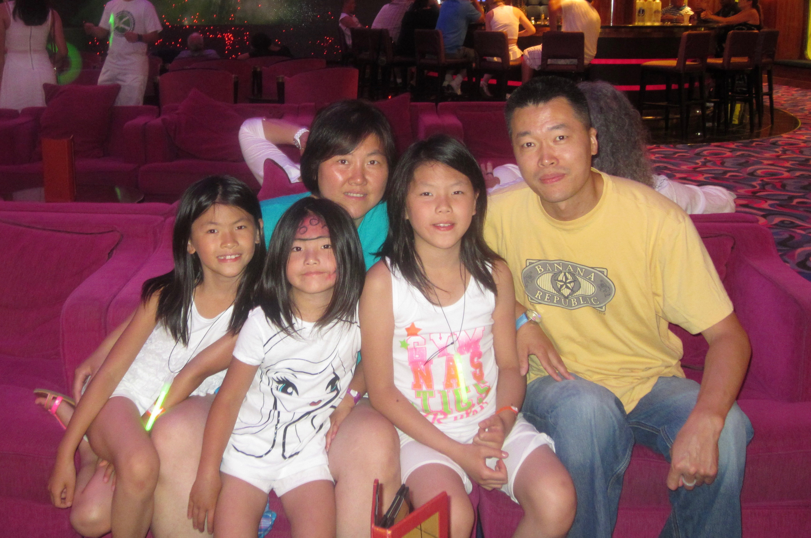

My Background
My Family

That’s me on the left! This picture shows my immediate family: my mom, my dad, my older sister Rachel, and my younger sister Victoria. My extended family is very large. My mom has five siblings and my dad has four, and I also have four grandparents, so family gatherings are always lively. My parents immigrated from Fuzhou, China and met in New York City, where I grew up and still live today. Being from Flushing, Queens means I’m surrounded by delicious food and a large asian cultural hub.
My sisters and I are each two years apart, born in 2004, 2006, and 2008. I love being one of three daughters, and I especially love being the middle child. I get to look up to my older sister while also being a mentor to my younger sister. We all major in something technology-related, with Rachel getting her bachelor’s in Computer Science and Victoria starting her first year of college doing Computer Engineering. However, we have pretty different interests: Victoria is extremely sporty, playing soccer and basketball, and running track, and Rachel is adventurous, loving to travel and learn new skills like skiing and piano. Having two sisters means never having a dull moment at home. A typical day together involves card games, boba runs, scrimmages, and movie nights.
My Extended Family
My cousins on my mom's side from oldest to youngest:
- Vivian (33)
- Vanessa (31)
- Nicole (28)
- Ashley (25)
- Rachel (my sister; 22)
- Michelle (21)
- Ian (20)
- Me! (20)
- Ryan (19)
- Victoria (my sister; 18)
- Nicholas (11)
- Phoenix (9)
Cruise Counter
Cruises are my family's favorite vaction to take. We have been on many in the last 20 years, and have repeated some ships as well.